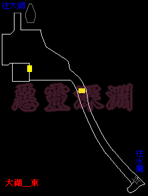
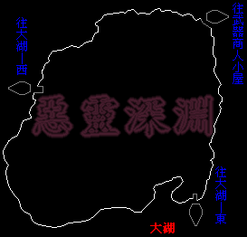
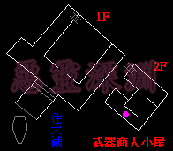
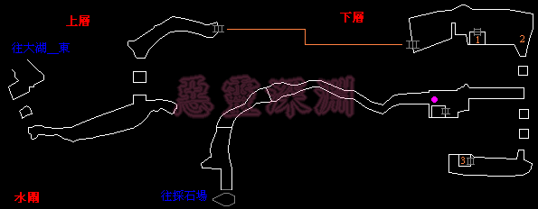
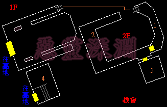

|
惡靈古堡～惡靈古堡４----地圖攻略～2-1
|
|
攻略內容以Normal為主，地圖上的紫色圓點●表示高價寶物的位置 ，標綠色的道具則是過關必須的重要道具。
 開始的小屋中有許多道具，其中有一份File某人的來信。湖邊可以進行捕魚， 這裡魚量豐富，有三隻大鱸魚加五隻小鱸魚，在湖之 主被打倒之後，湖已經變得很安全了。由於湖水渾濁，小鱸魚不容易看到，建議先用魚叉將大鱸魚一一叉去賣之後，再使用手榴彈 將小鱸魚一網打盡。
 想要快速過關的玩家不用回到湖上，但是想取得高價寶物的話，就往武器商人小屋去。回到大湖＿西的話，會在那裡遇到幾隻康米 洛斯犬，沼澤地的道具也會重新配置，只是會提前碰到爆頭後有疫生獸的村民，採石場就不用過去了，因為在後面一定會回到那裏 去，現在去的話是多此一舉。
 白天原本大門深鎖的武器商人小屋，到了晚上點起藍火開始營業，小屋四周要好好調查，二樓有高價寶物仮面の宝石＿緑（面具的 寶石＿綠），吊掛的火炬上也有小寶石，射落後到一樓撿取；從二樓的洞口跳下會到一樓的櫃檯，有彈藥可拿。 購物指南（new）：
從大湖＿東往水閘的路上，遇上了有疫生獸的村民，這代表以後的村民都有機會在被打倒之後跑出疫生獸來，疫生獸的攻擊力很高 ，攻擊範圍也很廣，要保持距離應戰；此處遊戲中的第一隻，打倒有5000ptas的獎勵。
 從水閘上層利用繩索到下層時，先注意旁邊上方的岩石上有小寶石；在高台1上射擊兩個箱子，在編號2處射擊一個箱子，製造出一 條可以跳躍過去的便橋，拉下高台3的水閘開關停止水流，小心回頭的時候從兩方而來的村民。
這裡在木架子上面的高價寶物是琥珀の指輪（琥珀的戒指），再往內從門上取得「圓形的紋章」，接著到最裡處搭乘小船，別忘了 門旁火炬上的小寶石。
下船後最好整理一下裝備或是存檔，在採石場要和巨人對決。 BOSS戰： 先看看戰鬥的環境，有三間小木屋，而且每間木屋裡都有道具等著玩家去補充，若是想要利用木屋來藏身，巨人會把木屋砸得稀巴 爛（木屋被毀壞後，道具會遺留在地上）；除了木屋之外，現場還有幾顆大樹和岩石，可能被巨人當成武器，隨時注意用行動鍵迴 避；巨人的動作很笨重，但是破壞力驚人，跟他太靠近時可以從他雙腳之間跑離，它的弱點在頭部與背部，受到一定的傷害後會露 出背上的疫生獸並痛苦地跪在地上，這個時候靠近他按行動鈕跳上他的背部用小刀連續攻擊。 在遊戲一開始的森林小道上救過小白狗的玩家，小狗會出現幫忙引開巨人的注意力，小狗的身手靈敏，不用擔心會被虐待，趁機攻 擊巨人的弱點；若是巨人重新回來攻擊Leon，只要引誘他去追小狗即可。 現在的目的是要前往教會，在抵達教會之前會有幾隻康米洛斯犬擋路 ，當牠們身上出現疫生獸時，用閃光彈可一擊必殺。在教會的 大門裝上「圓形的紋章」來把門打開。
 教會中似乎相當寧靜，調查完一樓後，發現二樓被鐵柵欄擋住無法通行，只好從編號1的地方經由吊燈跳到對面，但是房間3上了鎖 還是無法進去，在編號2的地方有個控制盤，可以調整台上的燈光，使紅綠藍三個燈片組合起來是中央的形狀即可把走廊上的鐵柵 欄打開，房間的鎖也會解除。
在房間3終於找到Ashley了，今後兩人要一起行動，在此拿到遊戲指南3。回到一樓，本章節結束。
疑難解答
琥珀の指輪（琥珀的戒指） 10000ptas 組合──有凹槽的面具 ＋ 面具的寶石＿綠 ＝ 仮面＋緑（面具＋綠） 10000ptas 有凹槽的面具裝滿三個寶石價格會躍升到20000ptas，請盡量先留著別賣。
就算是攻擊腳部擊倒村民，也可能出現。站長在遊戲之中發現，使用小刀打倒村民比用手槍打倒，有更高的 比例會出現疫生獸，這大概就是製作人小林裕幸所說的，敵人會遇強則強，遇弱則弱吧。 未經許可禁止轉載連結 |
||||||||||||||||||||||||||||||
惡靈深淵Biohazard Abyss http://98.to/coolbio